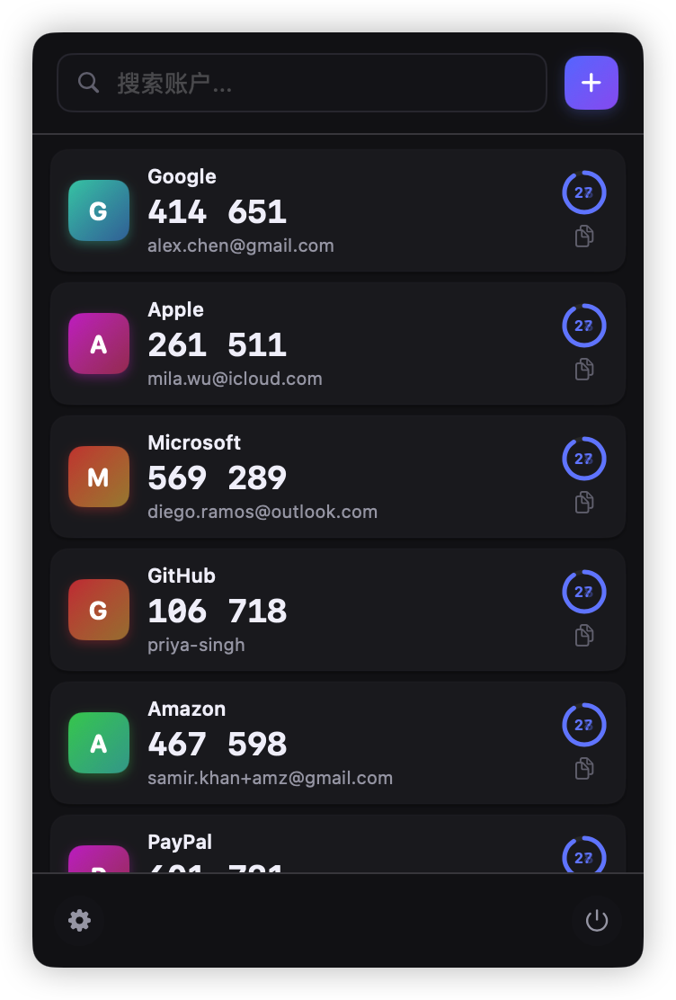

Keyden is a lightweight, open-source TOTP authenticator designed exclusively for macOS. Keep your two-factor codes private and accessible.
Built with privacy, security, and simplicity in mind
Your codes never leave your device. No cloud sync, no tracking, complete privacy.
Access your codes instantly from the menu bar. Copy with a single click.
Fully transparent code. Audit, contribute, and trust the security yourself.
Import accounts via QR code scan or manual entry. Migrate from other apps easily.
Built with security best practices. Your authentication codes are encrypted locally.
Designed specifically for macOS with a beautiful, native interface that feels at home.
Download Keyden for free and take control of your two-factor authentication
Version 1.0.4 • macOS 12.0 or later • Free & Open Source